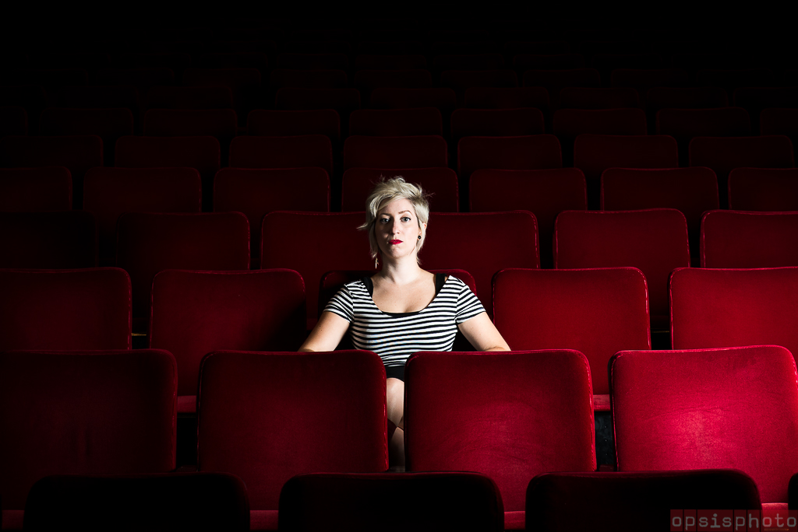

"De tous temps, le théâtre a cherché à se transformer; c'est ce qu'on appelle les crises. Tant que le théâtre est en crise, il se porte bien." - Jean Villard
En savoir plusAyant à son actif des études en cinéma et un baccalauréat en Études Théâtrales, Kristelle se passionne pour la création, l'intermédialité et la présence sonore au théâtre. Elle fonde en 2011 la compagnie Déviation² Théâtre et signe la mise en scène de "Et on tuera tous les affreux", une adaptation théâtrale du roman de Boris Vian. Elle cumule depuis les expériences en mise en scène, assistance, direction artistique, régie et conception sonore. Notamment auprès de Maxime Denommée, le Théâtre Camera Obscura, le Théâtre de la Pire Espèce et Le Théâtre de l'Ombre Rouge.
Artiste sensible à l'écriture scénique, elle développe une fascination pour l’image, les cadres et l’éclatement de ceux-ci. Le caractère réaliste, la banalité et le quotidien sont des aspects avec lesquels elle aime composer, surtout les situations où le malaise est à son paroxysme. Son travail interroge les limites du possible, réinvente la scène et offre des expériences hors du commun à un public averti. Les contrastes et les atmosphères, tant visuelles que sonores, sont au coeur de son travail.
Expérience de mise en scène hors du commun.
Établissement de programme musical et théâtral.
Préparation, coordination et exécution de la mise en oeuvre théâtrale.
Conception et synchronisation de trames et d'effets sonore.
Pour me joindre, n'hésitez pas à m'envoyer un courriel ou un message LinkedIn! Réponse rapide et assurée!